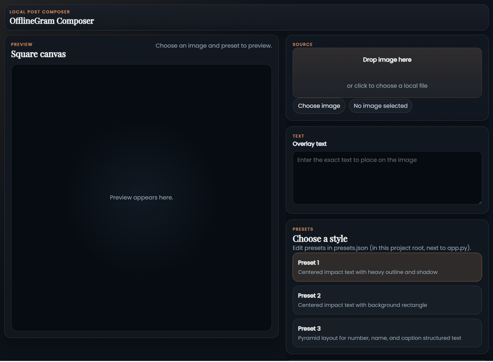
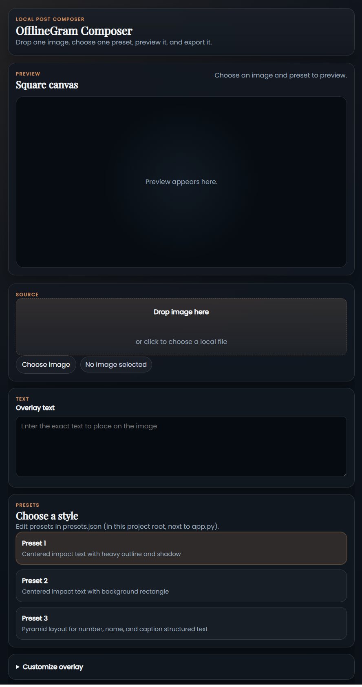

Open Source · Offline · Browser-native
Compose Instagram-style square posts in your browser — fully offline, no accounts, no cloud, no Electron.
View on GitHub Quick start ↓
Drag-and-drop or browse to load any JPEG, PNG, WebP, or BMP.
Enter overlay text in one place. Multi-line, uppercase, or mixed — handled automatically.
One click applies a full style — fonts, colors, shadow, outline, position, opacity.
See the composited square canvas instantly before you commit to export.
Save to any local folder. No watermarks, no compression, no upload.
Nothing leaves your machine. No telemetry, no login, no internet required.

Requires Python 3.11 (recommended) or 3.9+. Any modern browser.
git clone https://github.com/09ashishkapoor/offlinegram-composer.git
Double-click setup.bat — creates a virtual environment and installs all dependencies.
Double-click launch.bat, then open http://127.0.0.1:8000 in your browser.
Drop an image, type your text, choose a preset, preview, and click Export PNG.
| Layer | Library |
|---|---|
| Backend | FastAPI + Uvicorn |
| Image rendering | skia-python |
| Image loading | Pillow |
| Frontend | Vanilla HTML / CSS / JS |
| Tests | pytest + FastAPI TestClient |
Point the app at a folder of images and a plain text file of quotes (one per line). Every image is stamped with the next quote and exported automatically — no manual clicking per image.
Import a structured file where each entry maps to multiple text zones on one image (title, subtitle, caption…). The app composites and exports the entire batch in one pass.